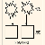

爱情类型测试
- 每个人性格不同，就算在爱情中会为了恋人有所改变，但大部分也保留了个人的性格在。而这些性格特点，则会在某些情况下影响你和恋人之前的感情。那么，先到下面这道爱情测试中看看你是哪种类型的恋人吧。
- 参与人数：1891题量： 30

爱与喜欢测试
- 爱与喜欢，是两回事，但是在生活中，我们难免都会把爱与喜欢混淆，那么你对于爱与喜欢傻傻分不清楚吗？快来测试一下吧!
- 参与人数：2106题量： 26

霍兰德职业兴趣测试
- 霍兰德职业兴趣测试是由美国职业知识专家霍兰德编制，易测网基于霍兰德先生的专业心理l测评量表，进行了适合中国国情的本地化，用于帮助在校大学生或对职业生涯迷茫的工作人士进行择业选择。人格与我们的职业有着密切的关系，不同职业对从业者的人格特征要求也是不同的，选择适合...
- 参与人数：246794题量： 36

虚拟梦境测试
- 特定的梦境是否蕴含着特定的意义？弗洛伊德把梦定位在无意识上，认为梦是那些来自心灵深处的本能和渴望的代言人。事实上，将梦的片断作为一种分析元素，是可以影射做梦者的内心世界的。潜意识里充满着被压抑的情感、观念、经历、动机和欲望，这些往往来自过去生活的事例，因压抑...
- 参与人数：32229题量： 7

测测你性格中潜藏的危机
- 目前，大部分的学者都认为人的性格是在后天环境中不断影响，不断形成的。但易测网不完全同意这样的观点，反而认为人的性格是很难改变。不知你是否有发现过，身体上某个位置上有着某种印记，无论先天的，如胎记，还是后天形成的，如疤痕，这类特征，你的父母几乎在相同的位置，有相...
- 参与人数：31956题量： 19

标准性向测试
- 美国的哈佛性向测试提到，伟大的灵魂是雌雄同体的，只有同时拥有两性特质，才能更好的理解男性与女性，更好的与真男人与女汉子沟通。你了解自己的性取向吗？来做一个国内标准的性取向测试吧。看看你是不是存在同性恋的潜质？还是更适合与同性来个精神交往？别紧张，多多了解自己其...
- 参与人数：47584题量： 15

潜意识的你是什么样
- 潜意识，是指人类心理活动中，无法意识或没有意识到的部分，是人们“已经发生但并未能感知的心理活动”。然后我们往往可以通过人的基本形态来揣测潜在的自我，如借助我们如何看待自己和他人，如何看待我们生活中日常活动的意义，我们所做出的关乎生死的快速判断和决定能力，以及我...
- 参与人数：37975题量： 20

FPA性格色彩测试
- 用“红”、“黄”、“蓝”、“绿”四种颜色来说明人的性格类型，解读“性格色彩密码”，以“色”识人，增加你对人生的洞察力，修炼个性，掌握自己的命运。人的性格是复杂的，一般情况不仅仅受一种色彩来支配，四种色彩的比例才是对性格最完整的描述，只不过通常其中的一或两种色...
- 参与人数：26667题量： 13

测测你是匆匆那年里的谁
- 时光飞逝，曾经美好的青春犹如一场梦。匆匆那年这部经典的电视剧是否也唤起了我们对青春的回忆。陈寻是少年时代的灿烂干阳，身上的耀眼光芒，照亮了一整个青春；方茴是春天里遗落的一朵丁香，在消逝的青春中温柔坚强的悄悄绽放；赵烨笑容灿烂的江湖少年，哪怕回首望去，岁月一片...
- 参与人数：17828题量： 27

你适合在哪个城市工作
- 在职业生涯规划的过程中，往往要考虑很多因素，其中第一个因素是要考虑地域。这也是不少人容易忽略的。很多人都希望能够去大城市，无论是做什么样的工作，只要能够留下来，就觉得自己离成功已经近了很多，以为将来的工作还可以慢慢地调整。但是你是否发现有的人在一个地方工作会...
- 参与人数：22997题量： 12

职业锚测试
- 职业锚强调个人能力、动机和价值观三方面的相互作用与整合，是职业决策时最稳定不变的因素，一般情况下一旦确定就很难改变。锚，是使船只停泊定位用的铁制器具，职业锚，实际就是人们选择和发展自己的职业时所围绕的中心，是指当一个人不得不做出选择的时候，他无论如何都不会放弃...
- 参与人数：33513题量： 32

情绪识别能力测试
- 表情是世界通用语。不分国界不分种族不分性别，大家通用一套表情。可读懂表情不是一个简单的技术活，它体现了你情商的重要指标：共情力。所以，以下10道题，你能答对多少，来练练手吧！
- 参与人数：23498题量： 10

脸盲症测试
- 电影电视剧看多了，你是不是觉得自己来来去去看到的都是那么几个演员？是不是也想大声呐喊：救救我吧，我分不清了！脸盲症又称为“面孔遗忘症”。该症状表现一般分为两种：看不清别人的脸；对别人的脸型失去辨认能力。那么今天，让我们来看看你明星脸盲症的级别吧！
- 参与人数：55339题量： 12

女生：你是红楼梦里的谁？
- 金陵十二钗，每一钗都有属于自己的故事。《红楼梦》中的人物个性鲜明，并且独具特色和魅力。想知道现实生活中的你更像是红楼梦中的谁吗？测试包括十二种结果，呈现的题目会根据你的选择略有不同，预计你需要完成6 - 8题，用时1分钟，金陵十二钗，你是哪一钗？女生专用，男...
- 参与人数：22705题量： 26

测测你是三国中的谁
- 东汉末年，世分三国，烽火连天，战不休。正所谓乱世铸就英雄，三国正是这样一个英雄辈出的时代。每给人心中都有一个英雄梦，虽不能身临其境，但通过这个测试，你或许可以找到三国中，你的前世。是那亦雄亦奸 、功过是非任评说的曹操？还是那鞠躬尽瘁、 出师未捷万古哀的诸葛亮...
- 参与人数：38816题量： 35

你是西游记中的哪位主角
- 每个人心中都有一个自己的西游，迂腐的唐僧、鬼马的悟空、贪吃的八戒以及忠厚正直的沙悟净，看看你是西游记中的哪位主角，测测你是西游记中的谁，本测试总共不超过12个题目，能够简单的映投射出你与西游记5位主角中的谁更匹配，点击开始进入测试。(仅供娱乐，非专业理指导)
- 参与人数：20434题量： 12

你是哪一种性感脑？
- 大脑也是重要的性器官——如果有这样的认识，你就可能和你的他更“性福”，你们在性爱上，就比那些只知道生理卫生构造的，先进多了，也高尚多了。凡是能够促进“性福”的新发现，就是智慧，就要运用。性学家分得更细，我们有3个性感大脑！这一发现是法国性学医生卡特琳娜·索拉...
- 参与人数：17355题量： 13

你在朋友圈中扮演什么角色
- 在朋友圈你是属于重信重义老大型，还是我行我素冷淡型、温馨婉约邻家型、备受呵护小姐型，那就赶紧来做这套测试，改善为人处事的一些小缺陷，让你在朋友圈中更加受欢饮。一起测试吧！
- 参与人数：17431题量： 16

你到底有多跟自己过不去
- [悦纳自己]。这四个字，在当代好流行。不过读起来只有四个字，做起来似乎万般困难。主人的朋友曾经对主人说：外界都是内在的投射，你最不喜欢哪种人，正说明这就是你最不能悦纳自己的地方。我们先从一个测试看看你究竟跟哪些人过不去吧：
- 参与人数：19248题量： 1

钥匙圈看你心思细腻程度？
- 生活中，你的心思细腻的程度有多少呢？想要知道答案的话，快来测试一下吧！
- 参与人数：17656题量： 1

你的魅力有几分？
- 想不想知道自己的魅力有几分呢？想要更加了解答案的话，快来做个小测试吧！
- 参与人数：36109题量： 1

建筑物暴露你的真性情？
- 你的真性情是什么样的呢？想要更加了解答案的话，快来做个小测试吧!
- 参与人数：18187题量： 1
遇到感情问题你能有多少理智？
- 当你遇到感情问题的时候，你还能有多少理智呢？想要更加了解答案的话，快来做个小测试吧！
- 参与人数：17136题量： 1

你会把他过于当成自己人吗？
- 你会不会把他过于当成自己人呢？想要更加了解答案的话，快来做个小测试吧！
- 参与人数：13724题量： 1

洗澡测你会不会横刀夺爱？
- 在生活中，你会不会横刀夺爱呢？想要更加了解的话，快来做个小测试吧！
- 参与人数：17850题量： 1

你该补充哪种爱情维他命？
- 想知道自己该补充哪种爱情维他命呢？想要知道答案的话，快来测试一下吧!
- 参与人数：13855题量： 1

你容易成为哪种坏坏男的猎物？
- 想知道你容易成为哪种坏坏男的猎物呢？想要更加了解答案的话，快来做个小测试吧！
- 参与人数：18024题量： 1

你女友是情场老手吗？
- 想不想知道自己的女友是不是个情场老手呢？想要知道答案的话，快来测试一下吧!
- 参与人数：14777题量： 1
闪电婚姻属于你吗？
- 你会不会闪电结婚呢？想要知道答案的话，快来测试一下吧!
- 参与人数：13868题量： 1

你会被恋人踢出局吗？
- 你会不会被恋人踢出局呢？想要知道答案的话，快来测试一下吧！
- 参与人数：15357题量： 1

你会爱上丑男吗？
- 每个人都是天生的外貌协会成员，每个人都欣赏帅哥，但不是每个人都会爱上帅哥。那你会爱上丑男吗？那就测试一下吧！
- 参与人数：17513题量： 1

你的爱情存在着秘密与谎言吗？
- 想不想知道你的爱情存在着什么秘密与谎言呢？想要知道答案的话，快来做个小测试测试一下吧！
- 参与人数：13726题量： 1

你的爱情路，路在何方？
- 想不想知道自己的爱情路，路在何方呢？想要知道答案的话，快来测试一下吧!
- 参与人数：15646题量： 1

喝饮料测你的幸福感？
- 生活中，你的幸福指数有多高呢？想要更加了解答案的话，快来测试一下吧！
- 参与人数：17267题量： 1

你的爱情生了什么病？
- 想不想知道你的爱情生了什么病呢？想要知道答案的话，快来测试一下吧！
- 参与人数：14034题量： 1

你是否会为爱痴狂吗？
- 你是否会为爱痴狂吗？想要更加了解答案的话，快来测试一下吧！
- 参与人数：14533题量： 1

谁令你一见倾心？
- 想不想知道谁会令你一见倾情呢？想要更加了解的话，快来做个小测试测试一下吧！
- 参与人数：17361题量： 1

你该不该接受他的爱情呢？
- 当他向你表达自己的爱意的时候，你该不该接受他的爱情呢？想要更加了解答案的话，快来测试一下吧!
- 参与人数：15742题量： 14

拿筷子姿势了解你的MR. right
- 应该有跟自己心仪的对象吃过饭吧，那你可否有留意他是怎样拿筷子的吗？今天小编为大家出的测试题就是可以从拿筷子的姿势测试出这个人是不是你的MR.right哦！赶快来测测吧！
- 参与人数：14691题量： 1

测试你单身的理由
- 测试你单身的理由身边朋友一个个都脱单了，只剩下你一个孤零零的还在“剩”着，想不想知道原因，超准心理测试，看看你为什么到现在还单着，爱情测试，一起来测试一下吧
- 参与人数：20912题量： 1

你是折磨人的情人吗？
- 你是个折磨人的情人吗？想要知道的话，快点接着往下看吧！
- 参与人数：15166题量： 1

你注定和谁厮守终身？
- 注定会和谁厮守终身呢？做个小测试就知道了!
- 参与人数：19157题量： 1
你在另一半心中的地位有多高？
- 想不想知道你在另一半的心中的地位有多高呢？想要知道的话，快来做个小测试吧!
- 参与人数：18130题量： 1

你的爱情绝症是什么？
- 想不想知道你的爱情绝症是什么呢?快来做个小测试告诉你答案哦!
- 参与人数：14613题量： 1

谁能给你真正的幸福？
- 生活中谁能给你真正的幸福呢？想要知道的话，快来作个小测试吧！
- 参与人数：15442题量： 1

七夕示爱你会成功吗？
- 七夕马上要来了，在这个浪漫的日子里，不如赶快向你心爱的他表白吧，想不想知道七夕你的表白会不会成功呢？快来测试一下吧！
- 参与人数：13311题量： 19

你们的爱情走到哪一步了？
- 想不想知道你和他的爱情走到了哪一步呢？想要更加了解的话，快来测试一下就知道了！
- 参与人数：14225题量： 1

另一半最在意你哪方面?
- 想不想知道你未来的另一半最在意你的哪方面呢？想要更加清楚答案的话，快来测试一下吧！
- 参与人数：16474题量： 1

你最怕被恋人挑剔什么
- 人都不是完美的，任何人谈恋爱都会看到对方的缺点，你最怕被恋人挑剔什么呢？通过这个测试，也许你能明白些什么。
- 参与人数：14109题量： 1

你有让人一见钟情的魅力吗？
- 生活中，你有没有让人一见钟情的魅力呢？想要更加了解答案的话，快来做个小测试吧！
- 参与人数：23673题量： 1

进男厕测你的风情指数
- 你是个怎样的女人，风情万种还是平淡无味？想知道答案么？那就进入测试吧！
- 参与人数：15832题量： 1

体检结果测你的上当指数？
- 在生活中，你的上当指数有多高呢？想要知道答案的话，快来测试一下吧!
- 参与人数：15275题量： 1

倒垃圾透露你的进取心？
- 进取心可让人感情丰富，由于不断更新的知识，会使人容纳更多的东西，视野更为开阔、心胸更为宽敞。想知道你的进取心有多少吗？快来测试一下吧！
- 参与人数：15308题量： 1

你的忘性比记性好吗
- 学生时代大家总是抱怨着背书,越长大越发觉得记性变得不好了,下面这个小测试来看看你的忘性比记性好吗?
- 参与人数：14873题量： 1

你是情绪地雷的拆解高手吗?
- 你是情绪的操纵杆吗？你能自我安慰、摆脱焦虑、灰暗和不安吗？请做下面的测试看看吧。
- 参与人数：13630题量： 1

你有恋子情结吗?
- 父母对孩子的爱是最无私的感情，也是一种与生俱来、最无可非议的爱。只不过，万物皆有度，过了就会产生反面的效果。虽然恋子情结有别于溺爱，但它绝对不是一个正面的感情，对自己和孩子的不良影响也是非常明显的。现在就跟随“科技紫微星座网”一起来看看，你是否有恋子情结吧。
- 参与人数：13449题量： 1

你有装傻的天份吗?
- 每当你张扬自己的智商。炫耀自己的见识时，危机常常就潜伏在不远处。人生无处不陷阱，学到“装傻”一是一门生存的技能。
- 参与人数：18598题量： 1

你的办公室心机有多重？
- 看似简单办公室往往交织着错综复杂际关系踩入雷区轻则罪同事重则错失前程办公室特殊舞台求存、谋发展必暗藏机或或少、或深或浅。你在办公室里的心机有多重呢？想要更加了解答案的话，快来做个小测试吧！
- 参与人数：15622题量： 1

你会因为什么而发生一夜情？
- 在现今的社会，一夜情不再是什么稀奇的事情，性爱对于每个人的意义都不一样，没有了所谓的传统观念，也不再是结婚之后才可以履行的权利，很多一夜情都是发生在情不自禁之下，那么，你会因为什么原因而发生一夜情呢？
- 参与人数：17760题量： 1

你的结婚对象会是什么股票？
- 如果把你的结婚对象比作股票，他会是什么股票？想知道答案吗？那就快来测试一下吧！
- 参与人数：14171题量： 1

你的智商因何罢工?
- 你的智商会因何而罢工？自私？敏感？柔弱？让我们来揭晓答案吧！
- 参与人数：15334题量： 1

你是不是天生爱情狂?
- 在你的心中,爱情有多重要?也许你是个工作狂,对爱情要求不高;也许你最爱的是自己,并不渴望爱情;也许你已被爱情伤害得千疮百孔,再不相信爱情;又或者你是个爱情万岁的人,一切为了爱情开路!那么,来做一个有趣心理测试吧,看看你是哪种人?
- 参与人数：14018题量： 1

你有怎样的爱情观
- 一个正常的心理生理健全的人，必然有着自己的一套爱情观，而爱情观是否成熟合时，才是爱情婚姻能否成功的重要条件或是标尺，看看你的爱情观究竟是什么？
- 参与人数：17041题量： 1

测测你对性的潜在欲望
- 弗洛伊德曾说，梦是被压抑的欲望的满足。所以现实欲望的不能满足，是梦产生的根源，现实的欲望不能被我们的意识接受，被深深的隐藏在潜意识里面，然而欲望总想跑出来，当在我们意识最深的白天是不可能得逞的，所以它会选择在我们睡眠中来获得释放。
- 参与人数：25297题量： 1

你的内心藏着一个怎样的你？
- 人的内心深处都有另外的一个自己，但内心的你又是被埋藏得最深的，甚至连自己都不了解不清楚，随着时间的推移，也许内心的你已经被完全忘却了。来做个测试，测试你的内心藏着一个怎样的你！一起来测测，让你更加了解自己！
- 参与人数：18510题量： 1

你们该做恋人OR朋友?
- 总是对他特别关注，为他偷看了你一眼而心跳加速，可是他到底是不适合你呢？这到底是不是爱呢？是你的错觉吗，还是他只是把你当朋友？而你们该做恋人还是朋友呢？
- 参与人数：19353题量： 14

你奉子成婚的几率有多高？
- 近年来，奉子成婚的事例慢慢的增加，几乎都是奉子成婚的，而在以前旧社会，这样是会被称为不贞洁的事情，不好的事情， 虽然现代社会也会有着个别这样的想法，可是人们都慢慢的接受奉子成婚。最近“辣妈正传”热播，里面夏冰也是有了小宝宝才想着要结婚，开头还不想要这小宝宝的她...
- 参与人数：15716题量： 4

测试你对另一半有什么要求？
- 爱情是什么？爱情其实也是一个简单的交换？你要的交换要求是什么，物质或是精神？
- 参与人数：16795题量： 1

看看你的负心指数到底多少？
- 你是个负心人吗？会因为各种现实而抛弃全心爱你的人吗？让我们来测测你的负心指数吧！
- 参与人数：16280题量： 1

看你什么情况下更紧张
- 紧张对于每个人而言都是一种正常的情绪，可是，你又知道自己在什么情况下最容易紧张吗？不知道？那就跟小编一起做个小测试吧。
- 参与人数：16915题量： 10

睡前动作测你的他是个什么人
- 想不想知道你旁边的他是个什么样的人呢？想不想更加了解他呢？想要的答案的话，快来测试一下吧！
- 参与人数：14687题量： 1

从喝酒看出男人的内心
- 酒是男人的朋友，从喝酒的姿态能看清这个男人的性格，对于某种酒的喜好能够看出这个男人的内心。你想不想了解男人的内心呢？想要知道答案的话，快来测试一下吧！
- 参与人数：15570题量： 1

你的奥克指数有多高
- 奥客是台湾话，意为挑三拣四提出不合理要求的客人，这种人时常会提出很多无理过分的要求来为难商家，稍有一点不合心意的地方就要和商家理论到底。那么你的奥客指数有多高呢？快来测试一下吧！
- 参与人数：13637题量： 1

你有让恋人变乖的能力吗
- 其实我们都很希望我们的情人像猫一样的乖乖的听话喔！不过你到底有没有这个本事呢？我们今天随堂测验就进入你的潜意识测验一下。
- 参与人数：15803题量： 1

恶梦看你的耐压指数有多少？
- 在人生历程中，源于潜意识的梦占了绝大部分的数量；梦，有好有坏，当你做恶梦时你是什么反应和心理？来做个测试，由恶梦看你的耐压指数。当恶梦产生，不管是否愿意，我们都得面对，在人生历程中，源于潜意识的梦占了绝大部分的数量，面对各种恶梦产生的反应其实正印证了我们面对问...
- 参与人数：18343题量： 1

你会是便利贴女孩吗
- 有一种女孩，朴素、安分、从不奢望什么，我们叫她“便利贴女孩”，虽然功能小小的，但又不可或缺，就像便利贴一样。关于便利贴女孩的概念，源于《命中注定我爱你》这部台湾偶像剧，陈乔恩解释：“便利贴女孩的存在，就像便利贴一样，人人撕下来就用，但未必用过就丢，或许有人会在...
- 参与人数：14775题量： 1

如何改变女汉子形象
- 女汉子绝对不是天生形成的，但绝对是后天练成的。想知道应该如何改变自己女汉子的形象吗？快来测试一下吧！
- 参与人数：14775题量： 12

你和什么类型的人比较般配？
- 爱情是美好的，但是爱情是错综复杂的东西，在爱情的世界里你可能无拘无束，但是要想让爱情顺利的走进婚姻中，就需要自己懂得自己要找的人和自己的性情相对的人，这样才能让自己的婚姻幸福，那么你知道自己和什么人搭配对呢，不妨自己测试一下吧。
- 参与人数：30490题量： 18

测测你在婚姻中是什么角色？
- 婚姻如同一栋房子。房子因为有了风景才有了生机，而婚姻有了爱情才会有意义。你会为婚姻这栋房子添加怎样的爱情风景呢？
- 参与人数：14844题量： 1

从喜欢的手指头看出最爱的人
- 你更偏好自己的哪个指头？每个指头都有自己的特点，就像每个人有自己特点一样。想从自己指头的偏好上找出爱人的影子吗？那就往下看吧！
- 参与人数：17409题量： 1

你容易焦虑吗？
- 这个世界总是来往的人群和车辆，纷繁的世界里面总是夹杂了太多不安和焦虑。你是能够平静的泰然处之，还是在浮沉中焦躁不安呢？
- 参与人数：15827题量： 30

你是心理脆弱的茶杯吗？
- Teacup(茶杯型)，即指心理极其脆弱、不堪一击的人。这些人过分专注于自己的不适或是问题。他们很难接受别人的批评或是拒绝，他们害怕一切可能的失败。当他们遇到工作或生活中的难题时，他们往往会崩溃。你呢？是否也如此脆弱？
- 参与人数：15038题量： 1

从买花来测试你的感情奉献度
- 人的感情有许多表达形式，也许在很小的行为细节中就暴露出我们真实的情感。你会买怎样的花束？或许里面就暴露了你的秘密哦~" alt="人的感情有许多表达形式，也许在很小的行为细节中就暴露出我们真实的情感。你会买怎样的花束？或许里面就暴露了你的秘密哦~
- 参与人数：14419题量： 1

从颜色搭配窥视你的感情弱点
- 在这多彩的世界，总是有许多出乎意料的搭配，而这些搭配恰恰反映出无数缤纷的心理世界。你有怎样的心理世界呢？接下来就用色彩来帮你回答吧！
- 参与人数：17521题量： 1

你是哪种依恋方式
- 在生命早期建立的关系会影响到我们在成年时所建立的关系。不过并不是说如果你和你父母关系不佳，你就会注定在每个你遇到的人身上重复这种模式。并且人是可以“改变”的，也的确会改变（一些研究者在最初实验的几个月或几年后再次评定了他们当初实验参与者的依恋类型，发现25%—...
- 参与人数：13708题量： 1

测你的诱惑能力有多强
- 一个人的魅力往往可以体现他对异性的诱惑能力。对异性诱惑力越大，显然魅力也就越大，对异性的诱惑下，自然而然魅力就小。但有些时候，魅力与诱惑力不一定能成正比。诱惑异性其实是一门学问，本领。需要观察对方，深入了解异性心态，抓住所爱，就能诱惑到他。快来通过下面的心理测...
- 参与人数：21815题量： 20

你从事哪个行业会发财？
- 工作没有激情，整天无精打采，想要跳槽很无助，不知道要从事哪个行业！你是否还在为跳槽的事情烦恼呢？快来测试看看吧，看看自己哪个行业能如鱼得水。
- 参与人数：22706题量： 10

你有多少可能成为牺牲品
- 想看看自己成为牺牲品的风险程度吗？那就进入下面这个测试吧！
- 参与人数：14597题量： 17

你像什么动物
- 你的内心到底存在一个怎样的动物？是优雅的长颈鹿，野性的豹，抑或善良的企鹅？想知道答案吗？请进入下面的测试，探索你心底的世界。
- 参与人数：22681题量： 21

阿拉伯驯马师测试
- 这是个很有意思的测试，采用的是西方流行的情境心理测试模式，通过这个测试最后你会得到一个对自己内心世界的认识。测试的情境如下：有一天，你名扬四方，连富甲天下的阿拉伯王子都来高薪聘请你为他驯马。你去还是不去？如果想去，就点击开始按钮体验你神奇的阿拉伯之旅吧。
- 参与人数：15610题量： 8

DISC性格测试
- DISC性格测试从Dominance－支配性，Influence－影响性，Steady－稳健性，以及Compliance－服从性四个方面对性格特质进行了描述，进而了解测试者的个性特点，自我管理与情绪稳定等各方面情况。DISC性格测试的理论基础源于发明测谎仪的威...
- 参与人数：119830题量： 30

心理年龄测试(专业版)
- 心理年龄也叫做“智力年龄”，简称“智龄”，是相对于实际年龄（生理年龄）而说的。心理年龄是指人的整体心理特征所表露的年龄特征，与实际年龄并不完全一致。人的一生共经历8个心理时期，即胎儿期、乳儿期、幼儿期、学龄期、青少年期、青年期、中年期、老年期。每个心理年龄期都...
- 参与人数：46755题量： 30

HBDI全脑优势测试
- HBDI(Herrmann Brain Dominance Instrument)——全脑优势思维模型，由美国的奈德·赫曼博士于1976年创立。同时兼具物理学博士及职业艺术家双重身份的赫曼博士，源于自己在不同领域有着杰出表现的经历，一直很想知道创造力的本质和源...
- 参与人数：22910题量： 8

测试你是哪一种老婆类型
- 男大当婚，女大当嫁，婚姻大事何等重要只要周末早上去家里附近的公园看看那些举着儿女照片的父母就知道了，但是也并不是每个人都能做个好老公好老婆的，相夫教子也需要资质啊，计算柴米油盐也是个体力活啊，哎，不行的就该开始努力了！想知道在另一半的眼中，你将来会是哪一种老婆...
- 参与人数：21402题量： 6
测试你内心的阴暗面
- 假设这是你做的一个梦，充满灰色与压抑的梦。你看见自己走进了一幢很高的建筑物里，这是一家医院。现代化的装潢与设备给你一种金属的冷冰感。你走进了电梯，来到了高层的一间病房......
- 参与人数：24318题量： 9

你是个讨人喜欢的人吗
- 在社交活动中，如果不考虑时间、地点，对象，脱离了特定的环境，即使无意之中，也会成为“不受欢迎的人”。有的人天生具有亲和感，容易让人亲近；有的人天生孤僻，给人带来一种疏离感。你是什么样的人呢？喜欢你的人多吗？讨人喜欢吗？一起来测测吧！
- 参与人数：18159题量： 26

NLP行为风格测试
- Neuro-Linguistic-Programming神经语言程序学(简称：NLP)是对人类主观经验的研究。更直白地说，NLP就是从破解人类的语言及思维模式入手，独创性地将他们的思维模式进行解码后，发现了人类思想、情绪和行为背后的规律，进而发现这些行为与个性...
- 参与人数：17797题量： 10

PDP性格测试
- 你是老虎、孔雀、考拉，还是猫头鹰、变色龙？五种特质没有不好，只有不同，而且与能力等没有关系目前是全球最大的个性特质与人才培养的顾问公司之一，专注于领导力开发及组织发展，总公司在美国已有数十年历史，目前全球已有三十多国家使用PDP系统PDP(Profession...
- 参与人数：35275题量： 30

九型人格测试
- 九型人格(Enneagram)，又名性格型态学、九种性格。它是一个近年来倍受美国斯坦福等国际著名大学MBA学员推崇并成为现今最热门的课程之一，全球500强企业的管理阶层均有研习九型性格，并以此为本，用以员工培训，团队建立，执行力提升等诸多方面。九型人格不仅仅是...
- 参与人数：32989题量： 36

测试你最真实的一面
- 你的性格是理想还是现实，积极热情还是沉着淡定？你深刻的了解自己最真实的一面吗？你知道自己是感性的人还是理性的人吗？你知道自己具有领导人的风范吗？据说这个心理测试是最红的心理测试，能轻松的测试出你最真实的一面！是否感觉不可思议？不用质疑，快来参加下面的心理测试吧...
- 参与人数：23222题量： 13

办公室里你最容易得罪谁
- 身在职场，人与人之间的矛盾和竞争是难免的，在与同事相处的过程中，公平的竞争可以催人奋进，而勾心斗角互相拆台则令人头疼。你可能因为说话太直爽容易得罪某种性格的同事，或者你因为轻视位置不高的人而落下怨恨等等，还有就是你有可能不小心之间，把马屁拍到马蹄子上，惹恼你的...
- 参与人数：14378题量： 10

你是容易冲动的人吗？
- 古人说“祸从口出”，我们常常会在盛怒之下或是不经意中说出一些伤害朋友的话。那么，你是一个冲动的人吗？做完下面的测试你就知道啦！
- 参与人数：15112题量： 11

个性成熟度测试
- 一个人生阅历丰富的人通常是一个个性成熟的人。这种人做任何事情都充满信心，善于运用自己的知识和学问，相信自己的能力和判断。在工作中，他能镇定地面对一切，哪怕遇到再大的挫折他也不会自暴自弃；在生活中，他总是运筹帷幄，对任何事都是先计划后实施。他有自己独特的见解，追...
- 参与人数：22371题量： 10

恶心承受能力鉴定
- 本测试是由伦敦大学Val Curtis开发的鉴定恶心承受能力的测试，测试共包含10个题目，大约需要3分钟左右完成。友情提示：测试过程中可能会出现让你反感或者恶心的图片，如果你觉得无法承受，强烈建议你及时退出以免受到不必要的精神伤害
- 参与人数：14103题量： 10

兰德经典职业测试
- 本专业心理测试是以著名的兰德经典心理测试题为蓝本，根据中国人心理特点加以适当本地化改造而形成的一套测试题，目前已被一些著名大公司，如惠普、微软、谷歌等公司作为对员工心理测试的重要辅助试卷，有着不错效果。现在已经有人建议将来作为对公务员的必选辅助心理测试推广使用...
- 参与人数：18367题量： 15

左右脑优势测试
- 人的左脑可称为“学术脑”，是理性的、逻辑的；右脑又称为“艺术脑”，是感性的、直观的。这个测试帮你找出你的左右脑优势，并给出合适的工作参考。
- 参与人数：20772题量： 11

性格弱点扫描
- 世上没有绝对的强者，更也没有永恒的弱者，只有不断的发现自己的不足并不断的完善自我，才能成为永恒的赢家。你的弱点找到了吗？通过下面的测试，你将发现你性格上另人不满意的地方！
- 参与人数：19687题量： 15

色彩性格测试
- 事物映入眼帘的第一感觉便是色彩，我们日常生活中挑选的每一样服装、鞋帽、饰品，甚至男女朋友的肤色都要看色彩，但是很多人不知道，你对颜色的感觉，实际上能够体现你的性格，你对于爱情、婚姻、家庭的态度等等，一起来测试一下吧，看看你的颜色取向意味着什么。
- 参与人数：16277题量： 27

你会遇上哪种男人？
- 许多人在生命中与我们擦肩而过，有的来去如风，有的却给你留下深刻的印象，而走进你生活中的那个他会是什么类型的呢？快来测测你会遇上哪种男人吧！
- 参与人数：22945题量： 20

你的爱情哪里出错了？
- 世间最完美的莫过于在对的时间遇上对的人，然后现实中的爱情并不总是让人如意。快来测测你爱情中的哪个环节出错了吧！
- 参与人数：15658题量： 20

你会怎样对待旧爱？
- 人们都说时间是最好的良药，但当你已经开始慢慢忘记过去，心里是否还是会有一道坎无法迈过，有一道伤痕无法抚平，有一个人无法忘记？你会用什么态度对待前任呢？
- 参与人数：15086题量： 10

TA为什么不爱你？
- 多少次你曾经问自己，我已经做得足够好了，为什么TA还是不爱我？这种无奈的感受最让人难以接受。那么快来测测看TA为什么不爱你吧！
- 参与人数：16202题量： 15

你是否有一颗恋爱玻璃心？
- 恋爱中的我们总是小心翼翼，而此时的我们也往往变得脆弱、敏感，快来测测看你是否有一颗恋爱玻璃心吧！
- 参与人数：14276题量： 13

你的爱情发出危险信号了吗？
- 爱情的滋味固然甜蜜，但有时也不免风雨和苦涩。明枪易挡，暗箭难防，爱情中那些微小的矛盾、瑕疵往往会给你带来意想不到的伤害。快来测测你的爱情有没有发出危险信号吧！
- 参与人数：13735题量： 20

你的爱情重多少克？
- 西方有种说法，人死以后灵魂与肉体分离，身体的重量会减少21克，所以才有了灵魂是21克的说法。如果有人用他全部的生命和灵魂在爱着你，这份爱就有21克。你的爱情重多少克呢？
- 参与人数：14545题量： 16

爱情奥斯卡你获什么奖？
- 在爱情中，你最擅长扮演什么角色？在别人的眼里，恋爱中的你是如何的与众不同？如果爱情界也有奥斯卡，来测测你会获得什么奖项吧！
- 参与人数：14419题量： 18

你的艳遇容易在哪儿发生？
- 在旅行中，是否期待着某一次的不期而遇？在咖啡店里，是否期待着某一个眼神的交汇？在街头的转角处，是否会发现爱就在那里？快来看看你的艳遇容易在哪儿发生吧！
- 参与人数：16699题量： 16

你会遇到更好的人吗？
- 对于现在的爱情，你也许会有所抱怨。那些美好的从始至终的爱情毕竟只是少数，我们还有很长的路要走，还有很多人等着我们去遇见。快来测测看你会不会遇到更好的人吧！
- 参与人数：16185题量： 20

你经不起哪种诱惑？（女生版）
- 是否有种不甘心于现在生活的想法？是否常常羡慕周围朋友们的生活？是否内心隐隐有一种想要改变现状的冲动？让我们测测你最容易被哪种人诱惑吧！
- 参与人数：17261题量： 13

恋爱中的你有多傲娇
- 外人看来的你是否是强硬、高傲，但当遇上喜欢的人，却内心一下变得柔软起来呢？恋爱中的你是否会口是心非，外冷内热呢？快来测测恋爱中的你有多傲娇吧？
- 参与人数：15543题量： 20

你因爱生恨的指数有多高？
- 有时候，恨一个人很容易，爱一个人却很难。感情往往就在爱恨之间游离。爱一个人越深，可能恨一个人也越深。爱情有时并没有想象中美好，你会不会因爱生恨呢？
- 参与人数：14452题量： 15

分手后还会复合吗？
- 你的心中是不是还放不下那个从前的他？无意间，总会有些过往的记忆涌上心头，当时的决定是否正确？快来测测你们之间有没有复合的可能吧！
- 参与人数：14762题量： 10

你们在磨合期会遇到什么矛盾？
- 每对情侣都会经历一段爱情的磨合期，这个时间或短或长，而许多原本看似美好的爱情都倒在了磨合期，输给了时间。现在就来测测你们之间在爱情磨合期可能遇到什么矛盾，调和的可能性有多大吧！
- 参与人数：13640题量： 13
艺术风格测试
- 本测试是由英国剑桥大学赖默斯博士开发完成的，用以鉴定测试者的艺术风格。测试选取了不同时期、不同国家的24幅绘画作品作为素材，并将艺术风格测试结果与测试者的性格特点进行了相关分析。因此，通过本测试你不但可以得知你的艺术风格，还可以得知你潜在的、或者已经表现出来的...
- 参与人数：15263题量： 24

衰老速度测试
- 美国《旅游》杂志最新载文指出，生活习惯等多方面因素可以预测衰老速度。以下是美国衰老研究专家，《超级长寿》一书作者马克·里伯尼斯博士设计的21道衰老速度测试题，不妨一试。
- 参与人数：15835题量： 21
反应灵敏度测试
- 本测试可用于鉴定用户的反应灵敏度，属能力测试的一种。反应灵敏度是指给被试呈现刺激后，同时要求他们对这种刺激的信息进行加工并采取正确应对措施，这种持续的刺激-反应策略被称之为反应灵敏度。 反应灵敏度高的人具有快速的信息加工能力与问题处理能力，从某种意义上来讲，是...
- 参与人数：12321题量： 1
- 
辨别反应时测试
- 本测试可用于鉴定用户的辨别反应时，属专业心理测试中的能力测试。辨别反应时又被称之为C反应时，是指当呈现两个或两个以上的刺激时，要求测试者对某一特定的刺激作出反应，对其它刺激不做反应，测试者在刺激呈现到做出辨别反应的这段时间，就是被试的辨别反应时。例如呈现两种或...
- 参与人数：12333题量： 1
简单反应时测试
- 本测试可用于鉴定用户的简单反应时，属专业心理测试中的能力测试。简单反应时又被称之为A反应时，是指给被试呈现单一刺激，要求他们只作单一的反应，这时刺激与反应之间的间隔就是简单反应时。想知道你的反应是否灵敏，通过本测试，可以准确无误的测试出你的反应速度。
- 参与人数：12307题量： 1

你能识别假笑吗
- 笑是人们日常生活中出现得最多的表情之一。很多时候，形形色色的笑容并不都是发自内心的，而且假笑与真笑通常很相似，并非每个人都具有很强的察言观色的能力。本测试是由来自加利福尼亚大学的Paul Ekman教授开发，用以判断测试者是否具有识别真笑与假笑的能力。本测试不...
- 参与人数：18417题量： 20

测测你的重色亲友程度
- 我们都有是这样的一个朋友：他或她在遇上心仪的异性后就从朋友圈的聚会里完全失踪。曾经每天粘在一起的女伴，或是夜夜举杯痛饮的兄弟，有了异性后就丧失了人性。心情不好时，打通也只会得到“抱歉，我们已经订好了去海边”或者“真没办法，我得陪女朋友逛街”。这种状况会一直持续...
- 参与人数：16148题量： 6

SAS焦虑自评量表
- 焦虑自评量表是根据Zung于1971年编制的焦虑自评量表（Self—Rating Anxiety Scale，SAS）改编而成。该系统集心理学、精神病学、多元统计学、人工智能、计算机网络技术于一体。准确、迅速地反映伴有焦虑倾向的被试的主观感受。为临床心理咨询、...
- 参与人数：18545题量： 20

人格投射测验
- 人格投射测验属于投射法测验的一种，用以挖掘人们潜意识中的自我。只需要完成本测验的7个小题，你就可以知道潜意识中你是那种类型的人。本测验具有一定的测试信度和效度，并非纯属娱乐，请认真完成每一个题目。
- 参与人数：18863题量： 7

潜在人格测试
- 每个人的心灵都有一个另外自己，这叫潜在人格，如果你被潜在的人格征服了，那么现在的你和潜在的你是一致的，如果你们还在激烈的战斗，也许潜在的你和现在的你相反的，也就是说你现在的性格是和你心灵的完全不一样，只有在特定的情况下才会激发你的潜在人格。想了解内心深处真实的...
- 参与人数：30997题量： 10

哈佛性向测试
- 某人说：伟大的灵魂都是雌雄同体的。哈佛大学性别倾向测试可以测出你的大脑较偏阳性，还是阴性，结果可了解你的大脑男性荷尔蒙水平。
- 参与人数：31927题量： 30

SDS抑郁自评量表
- 天气逐渐冷了,好多朋友开始发现自己或者周围的人总是情绪低落,凡事提不起兴趣，不愿意出门．那我们就应该当心了，着可能是抑郁的苗头，我们有一种病就叫做－－季节性抑郁！这里给大家推荐一个规范的测试，可以初步评价一下自己的心境，以便正确认识自己目前的状态，做出相应的调...
- 参与人数：36507题量： 20

自我控制能力测试
- 自我控制能力（简称自控能力）是自我意识的重要成分，它是个人对自身的心理和行为的主动掌握，是个体自觉地选择目标，在没有外界监督的情况下，适当地控制、调节自己的行为，抑制冲动，抵制诱惑，延迟满足，坚持不懈地保证目标实现的一种综合能力，表现在认知、情感、行为等方面。...
- 参与人数：19830题量： 12

决策风格测试
- 随着年龄的增长，我们也要开始学着为自己安排生活，为一些重大事件做决定，例如考试、升学、就业、交友、婚姻等，甚至平常的生活琐事也都充满着抉择。有的人能理性分析做决定；有的人却需要依赖他人为自己下决定。你知道自己是如何做决定的吗？这样的决策方式你满意吗？让我们透过...
- 参与人数：15089题量： 24

你的哪种气质最吸引人
- 不同的人多有不同诱人之处，很可能是一张甜美的脸蛋，又或者是一个令人陶醉的眼神。吸引力是一种难以言喻的感觉，跟一个人的教养和性格都有密切关系。想知道自己什么最诱人？你可以尝试回答下面的问题，看看自己的魅力所在吧！
- 参与人数：32438题量： 9

外向程度测试
- 外向程度测试得分范围在0与100之间，外向程度测试能够映射一个人内倾或外倾的程度。如果你想了解究竟是内向还是外向，“外向程度测试”能够满足你的要求。本测验包含50个题目，预计完成测试需要6-10分钟左右
- 参与人数：15826题量： 50

瑞文高级推理测验
- 《瑞文高级推理测验》是根据英国心理学家瑞文编制的一种非文字智力测验，通过图形的辨别，组合，系列关系等来测量智力组成中的一般性智力因素。在测量人的一般智力因素时，瑞文高级推理测验与瑞文标准推理测验常常结合使用，它们的编制原理相同，但是瑞文高级推理测验的难度更大。...
- 参与人数：16808题量： 36

恋爱方式测试
- 恋爱方式不仅左右着恋爱成功的可能性，而且对恋爱双方的情感体验也会产生影响。本测试可以用来帮助人们了解自己恋爱方式的恰当性。
- 参与人数：15976题量： 10

爱情关系合适度测试
- 本测试从个人感受、价值观、理性基础等三个方面分析双方婚姻关系的适合程度。用来帮助青年人了解自己与自己的恋人或伴侣是否具备幸福婚姻的条件。适用于处在恋爱或者婚姻阶段的成人用来了解自己与伴侣的适合程度，作为婚姻决策的参考依据。
- 参与人数：14382题量： 40

虚伪指数测试
- 是不是经常为这个世界上有那么多虚伪的人而唏嘘不已，觉得自己生不逢时，难以释怀。有一天，你惊奇地发现，你自己也在慢慢变成这样的人，你是感觉到恐惧，还是觉得这是再正常不过的事？下面就来看看自己沾染了多少虚伪的气息吧。
- 参与人数：21842题量： 9

国际标准EQ测试
- 情商（EQ）：一个近几年才提出来相对智商（IQ）而言的心理学概念，是情绪的商数，或称情绪智慧；指人的乐观与悲观，急躁与冷静，大胆与恐惧，沉思与直觉等情绪反应的程度。这是一组欧洲流行的测试题，共33题，最大EQ为174分。如果你已经准备就绪，请点击开始答题，从选...
- 参与人数：31228题量： 33

国际标准IQ测试
- 智商，就是IQ（Intelligence Quotient的简称)，通俗地可以理解为智力，是指数字、空间、逻辑、词汇、创造、记忆等能力，它是德国心理学家施特恩在1912年提出的。智商表示人的聪明程度：智商越高，则表示越聪明。想检验自己的智商是多少吗？这并不困难...
- 参与人数：42785题量： 30

心理年龄鉴定(标准版)
- 一个人的心理年龄可能和他的实际年龄是不相符合的，比如说年事已高的老人，言行举止可能会宛如孩童；身处花季的少男少女，可能却是老练成熟。你的心理年龄多少岁了？专业心理年龄测试题，能够测试你的心理年龄，鉴定你的心理年龄！
- 参与人数：69327题量： 30

菲尔人格测试
- 这个测试是菲尔博士在著名主持人欧普拉的节目里做的，国际上称为“菲尔人格测试”，这已经成为很多大公司人事部门实际用人的“试金石”。
- 参与人数：19501题量： 10

OMA指数测试
- 以下的心理测验，是根据美国最风行的“一分钟道歉法-The One Minute Apology”（简称OMA）来设计的，赶快来测看看你的 OMA 指数，只有懂得“道歉”的力量，才能成为真正的赢家喔！本测试是通过一个人对道歉的态度来定位性格特点，回答时请根据实际...
- 参与人数：15112题量： 10

罗夏墨迹测试
- 过去一个世纪，专业人士对形形色色的人群——从神经质的家庭主妇到纳粹战犯进行罗夏墨迹测验，他们相信，这种测试可以揭示驱使人们行为与情绪活动的秘密特征，对他们的心理健康进行评估。举个形象的例子，罗夏墨迹测验很大程度上就像是盯着云彩看：当你看到毫无意义的形状，大脑会...
- 参与人数：33010题量： 5

MBTI职业性格测试
- 由美国的心理学家Katherine Cook Briggs (1875-1968) 和她的心理学家女儿Isabel Briggs Myers根据瑞士著名的心理分析学家Carl G. Jung (荣格)的心理类型理论和她们对于人类性格差异的长期观察和研究而著成。...
- 参与人数：36420题量： 28